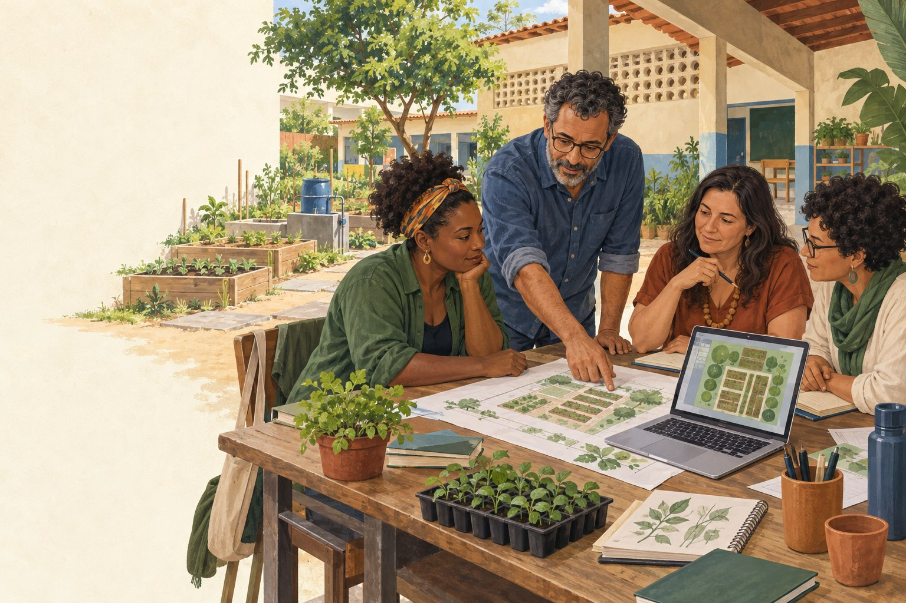
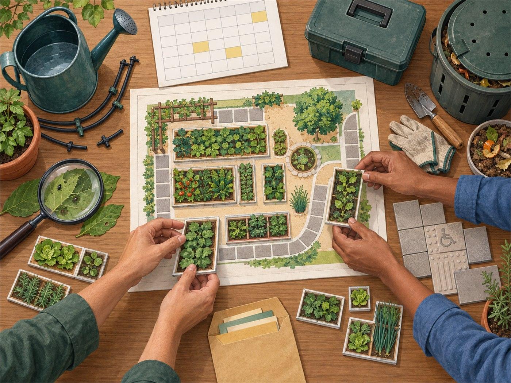

Planejar antes de plantar.
O HortaLab Escola ajuda professores e gestores a transformar uma ideia de horta em um plano pedagógico, agroecológico e possível de cuidar.
Funciona sem cadastro e sem enviar dados. Suas escolhas ficam somente neste dispositivo.

Não há tamanho universal. A escala depende de água, equipe, circulação, calendário e finalidade pedagógica.
Planejamento não é autorização. Confirme solo, segurança, acessibilidade e normas com profissionais e comunidade local.
Jornada guiada
Seu plano, passo a passo
Pronto para começar
Etapa 1 de 9
Uma horta começa com boas perguntas
Antes de escolher canteiros ou culturas, o planejamento precisa aproximar o desejo pedagógico das condições reais de cuidado.
- Compare três escalas sem transformar 50 m² em meta.
- Monte zonas funcionais e preserve circulação.
- Relacione atividades curriculares a registros e responsabilidades.
- Experimente desafios e revise decisões com feedback transparente.
Etapa 2 de 9
Diagnóstico da escola
Registre condições do projeto, não dados pessoais. As respostas orientam alertas e podem ser revistas depois.
Etapa 3 de 9
Escolha um cenário de área
Use a escala como hipótese de planejamento. A área produtiva não precisa ocupar todo o espaço disponível.
Cenários menores podem ser mais adequados quando água, equipe, circulação ou continuidade são limitadas.
Etapa 4 de 9
Composição virtual da horta
Adicione zonas, ajuste áreas e reorganize o mapa. Arrastar é opcional: todos os comandos também funcionam por clique e teclado.
Ajuste a área ou a posição.
Etapa 5 de 9
Planejamento pedagógico
Selecione experiências de aprendizagem e registre como serão observadas. A horta é uma plataforma educativa, não apenas produtiva.
Etapa 6 de 9
Eventos e desafios
Escolha como o plano responderia a mudanças reais. Você poderá revisar qualquer decisão.

As consequências são determinísticas e servem para tornar compromissos visíveis; não certificam viabilidade.
Etapa 7 de 9
Painel de viabilidade
Quatro lentes ajudam a conversar sobre o plano. Os resultados explicam escolhas, riscos e pontos que ainda exigem confirmação local.
Como os indicadores são calculados
Etapa 8 de 9
Plano final
Use este documento para dialogar com gestão, equipe e comunidade. Confirme as condições no local antes de implantar.

Etapa 9 de 9
A cartilha continua a conversa
Consulte fundamentos, pesquisa-ação, critérios de área, manutenção, acessibilidade, segurança, governança, checklists, glossário e referências acadêmicas.
Abrir cartilha digital